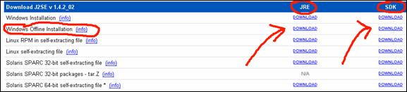
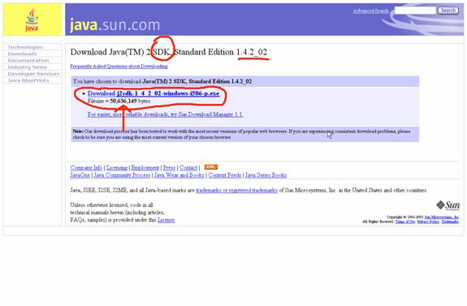

Let's point our browser to the following URL: http://java.sun.com/j2se/1.4.2/download.html
The section “Download J2SE” is what we are looking for (at the time of this writing it is the second section).
Look at the following picture:

Here you will see that the Download J2SE section contains many lines, mostly one per each operating system. For Windows we have two lines. I will use the second (Offline Installation) which will yield a larger file to download but the resulting file can be installed also on machines without an Internet connection (feel free to use the first Windows line if you are going to install on an Internet connected machine).
You will also notice that each line has two download links: a JRE link and a SDK link which will be used if you want a “Development setup”. So click on the download link for the Windows Offline Installation of the SDK.
So now this screen will come up:

From which you will download the large (50MB) file (as we said earlier, if you are installing on a well connected machine you could opt for the Windows installation which is smaller). As always take note of the filename and location of the saved file.
The installation will eat up 275MB of disk space. Simply accept all default values and take note of the place where the JDK and/or the JRE will be installed.
You might want to check that the installation has properly setup two environment variables:
JAVA_HOME should point to the directory in which you have just installed the JDK. If you have chosen the default places it will be:
JAVA_HOME=c:\j2sdk1.4.2_02 or similar.
The PATH variable should contain the following: %JAVA_HOME%\bin
In XP you can check the environment variables by opening a shell window (also called a DOS window for historical reasons ) and typing the SET command.